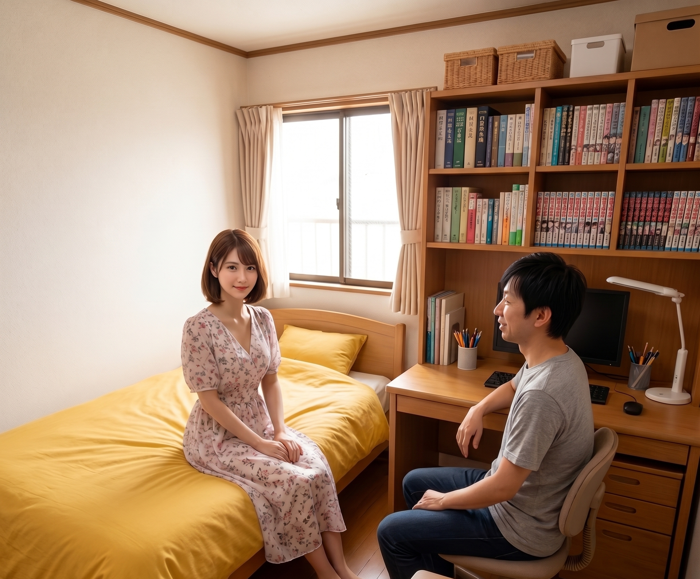

登場人物
美咲（みさき）
女子大生。就活のエントリーシートの資格欄が真っ白なことに気づき、慌ててITパスポートの勉強を開始。ITは完全に素人。高校時代は可愛くて人気者だったので、ちょっとプライドが高い。素直じゃない。

拓也（たくや）
美咲の高校時代の同級生。東京大学工学部。子どもの頃からパソコンばかりいじってきた生粋のオタク。実は美咲のことが好きだが、10年近く言い出せていない。教えるのは得意だが、口が悪いのが玉に瑕。

今日の問題
今日の問題
メッセージダイジェストを利用した送信者のデジタル署名が付与された電子メールに関する記述のうち、適切なものはどれか。
- アデジタル署名を受信者が検証することによって、不正なメールサーバから送信された電子メールであるかどうかを判別できる。
- イデジタル署名を送信側メールサーバのサーバ証明書で受信者が検証することによって、送信者のなりすましを検知できる。
- ウデジタル署名を付与すると、同時に電子メール本文の暗号化も行われるので、電子メールの内容の漏えいを防ぐことができる。
- エ電子メール本文の改ざんの防止はできないが、デジタル署名をすることによって、受信者は改ざんが行われたことを検知することはできる。
第1幕：呼び出された理由
美咲の部屋。ローテーブルの上にノートPCが開かれ、その画面を美咲がじっと睨んでいる。インターホンが鳴り、玄関先で少し声がした後、拓也が部屋に通される。

拓也
久しぶりに家、呼ばれたね。……で、なんか深刻そうな顔してるけど

美咲
見て、これ
美咲がノートPCの画面を拓也に向ける。件名には「選考結果のご案内」、応募した企業の名前、そして見慣れない添付ファイルのアイコン。
拓也
就活の企業からのメール？

美咲
うん。でも、なんか下のほうに『本メールはデジタル署名が付与されています』とか書いてあって……。詐欺メールとかじゃないか、急に怖くなってきて
拓也
あー、なるほどね。それで呼び出されたわけか
美咲
べ、別に呼び出したくて呼んだんじゃないから。近くに聞ける人がいなかっただけ
拓也
はいはい。……ちょうど今日の問題も、デジタル署名がついたメールの話だから、ちょうどいいや。一緒に見ていこう
第2幕：署名＝暗号化、だと思ってた

美咲
じゃあ答えるわね。デジタル署名がついてるってことは、ウでしょ。『暗号化も行われるので、内容の漏えいを防げる』
拓也
お、なんでそう思った？

美咲
だって『署名』って、本人しか書けないものでしょ。実印とかサインみたいに。実印を押した書類って、他人に勝手に開けられたり、中身を書き換えられたりしないようにするものじゃない
拓也
発想としては悪くないんだけど、署名と暗号化は、実は別の機能なんだ
美咲
え、別なの？
拓也
うん。デジタル署名がついてても、メールの本文自体は普通に読める状態で送られてることが多い。署名があるからって、勝手に内容が隠されるわけじゃないんだよ
美咲
……え、じゃあ署名の意味なくない？ 誰でも読めちゃうなら
拓也
そこがポイントで、署名が守ってるのは『中身を隠すこと』じゃなくて、『誰が書いたか』と『途中で書き換えられていないか』なんだ
第3幕：透明な袋に割り印を押す
拓也
たとえ話するね。透明なビニール袋に手紙を入れるところを想像して
美咲
透明？ 中身、丸見えじゃない
拓也
そう、丸見えでいいんだ。その上で、袋の口に割り印を押す。誰の印鑑かは見ればわかるし、袋を勝手に開けて中の手紙をすり替えたら、割り印が壊れて一発でバレる
美咲
あ……中身を隠す袋じゃなくて、"誰が封をしたか"と"開けられてないか"だけを証明する袋ってこと？

拓也
そういうこと！ デジタル署名も同じで、①送った本人だと証明できる、②途中で本文が書き換えられたらバレる、この2つだけを保証してる。中身を見えなくする＝暗号化は、また別の作業が必要になる
美咲
じゃあ、割り印の中身、実際どうやって作ってるの？
拓也
まず本文全体からメッセージダイジェストっていう短い値を計算する。これ、よく『文章の指紋』って言われるんだけど、本文が1文字でも変わると、全く別の指紋になるんだ
美咲
指紋……なるほど
拓也
送信者は、その指紋を自分だけが持ってる秘密の鍵で署名して、メールにくっつけて送る。受信者は、送られてきた本文から自分でも指紋を計算し直して、届いた署名から取り出した指紋と見比べる
美咲
一致してれば、途中で誰にもいじられてないってこと？
拓也
完璧。一致してれば『本人が送った』『改ざんされてない』のダブルで証明できる。もし1文字でも書き換えられてたら、指紋が合わなくなって、受信者側で『あ、これ改ざんされてる』ってすぐわかる
美咲
……あー！ そういうことか！ "防げる"んじゃなくて、"バレる"のね。書き換えそのものは止められないけど、書き換えられたら必ず気づける、みたいな
拓也
そこまで自分で言えたら、もう完璧だよ
第4幕：拓也、また空回る
拓也
よし、じゃあ理解したところで……ちょっと待ってて
拓也がリュックをゴソゴソと漁り、分厚いハードカバーの本を取り出す。表紙には『暗号技術大全（改訂版）』の文字。
美咲
……なにそれ
拓也
電子署名とか公開鍵暗号のこと、もっと体系的に知りたいかなと思って。実は前からリュックに入れて持ち歩いてたんだ、美咲に会うとき用に
美咲
厚さ、6センチくらいあるじゃない
拓也
うん、読み応えあるよ。RSA暗号のところとか、公開鍵と秘密鍵の数学的な仕組みまで載ってて――
美咲
ちょっと待って、私まだ『指紋』の話しかわかってないんだけど
拓也
大丈夫、基礎からちゃんと書いてあるから
美咲
……表紙開いた瞬間に心折れる自信あるんだけど

拓也
え、そんなに？
美咲
あんた、たまに『これ渡せば喜ぶだろう』みたいな謎の親切、押しつけてくるわよね。気持ちはありがたいけど、今欲しいのはこれじゃないの

拓也
……ごめん。テンション上がると、つい
美咲
今度からは、まず一言『こういう本あるけど見る？』って聞きなさいよ
拓也
たしかに。次から気をつける
美咲
……ふん、わかればいいのよ
第5幕：残りの選択肢を片付ける
拓也
気を取り直して、残りのアとイね
美咲
アは『不正なメールサーバから送信されたかどうかを判別できる』……これ、なんかそれっぽくない？
拓也
惜しいけど違うんだ。デジタル署名が証明するのは送信者本人についてであって、『どのメールサーバを経由したか』は別問題。サーバが不正かどうかまでは、署名だけじゃわからない
美咲
あ、"誰が書いたか"の話であって、"どの道を通ってきたか"の話じゃないのね
拓也
その通り。じゃあイは？
美咲
『送信側メールサーバのサーバ証明書で……なりすましを検知できる』……なんか単語は近い気がするけど
拓也
これも実は主語のすり替えがあって、"サーバ証明書"じゃなくて"送信者個人の署名"で検証するのが正しいんだ。似た言葉が混ざってる、ひっかけ問題だね
美咲
うわ、紛らわしい。『サーバ』ってだけで釣られるとこだった
拓也
試験あるあるだよ。"誰の"証明書で、"何を"検証してるかを、いつも一語ずつ確認する癖をつけるといいよ
美咲
なんか今日、地味に読解力の勉強してる気がするんだけど
拓也
ITパスポートの選択肢問題、実はけっこう国語なんだよね
問題文（再掲）
メッセージダイジェストを利用した送信者のデジタル署名が付与された電子メールに関する記述のうち、適切なものはどれか。
- アデジタル署名を受信者が検証することによって、不正なメールサーバから送信された電子メールであるかどうかを判別できる。
- イデジタル署名を送信側メールサーバのサーバ証明書で受信者が検証することによって、送信者のなりすましを検知できる。
- ウデジタル署名を付与すると、同時に電子メール本文の暗号化も行われるので、電子メールの内容の漏えいを防ぐことができる。
- エ電子メール本文の改ざんの防止はできないが、デジタル署名をすることによって、受信者は改ざんが行われたことを検知することはできる。
まとめ：選択肢ごとの答え合わせ
| 選択肢 | 内容 | 正誤 |
|---|---|---|
| ア | 不正なメールサーバからの送信かどうかを判別できる | 不正解（署名が証明するのは経路ではなく送信者） |
| イ | サーバ証明書で、なりすましを検知できる | 不正解（証明書ではなく送信者本人の署名で検証する） |
| ウ | 署名と同時に本文も暗号化され、漏えいを防げる | 不正解（署名と暗号化は別機能。本文は平文のことが多い） |
| エ | 改ざんの防止はできないが、改ざんの検知はできる | 正解 |
答えエ 電子メール本文の改ざんの防止はできないが、デジタル署名をすることによって、受信者は改ざんが行われたことを検知することはできる。
覚え方のコツ
透明な袋に、割り印。
- デジタル署名は中身を隠さない。暗号化とは別の仕組み
- 証明できるのは「本人が送った」＋「途中で書き換えられたら気づける」の2つだけ
- 「防止」ではなく「検知」。改ざんそのものを止める力はない
拓也
メッセージダイジェスト＝本文の指紋、って覚えとくといいよ。1文字変われば指紋も変わる。受信者が自分で計算し直した指紋と、届いた署名の指紋を見比べる、ってイメージだけ持っておけば選択肢は迷わなくなる
美咲
暗号化とセットだと思い込んでたのが、そもそもの間違いだったのね
おまけ：暗号化と組み合わせたいときは？
拓也
ちなみに、署名だけじゃなくて中身も隠したいときは、別途『暗号化』の処理を組み合わせるんだ。署名＝本人証明と改ざん検知、暗号化＝内容を第三者から読めなくする。この2つは目的が違うから、必要なら両方使う
美咲
じゃあ、今回の就活メールは？
拓也
これは中身がそのまま読める状態で署名だけついてるパターンだね。企業からの正式な通知だと証明したい、っていう用途なら、これで十分なんだよ
美咲
……つまり、詐欺メールじゃなさそうってこと？
拓也
うん、少なくとも署名がついてること自体は、怪しさを下げる材料にはなる。ただ最終的には、送信元のドメインとか、応募したページと同じ会社かどうかも合わせて確認するといいよ
エピローグ
ノートPCを閉じて、美咲がひと息つく。
美咲
ふう……。とりあえず、変なメールじゃなさそうで安心したわ
拓也
よかった。にしても、こんな早さで就活のメール来るんだね
美咲
まあね。……ねえ、今日教えてくれたこと、ちゃんと覚えといてよね
拓也
うん、大丈夫。忘れないよ
美咲
証拠、残しとく？ その、デジタル署名的な意味で
拓也
……署名しても、中身が誰にでも見られるようになるだけだよ。暗号化とは違うから
美咲
別にいいわよ、誰に見られても
拓也
え
美咲
な、なによ。今日教わったこと、素直に納得しただけだから。深い意味はないわよ
拓也
……そう
美咲
なによ、その微妙な顔
拓也
いや、なんでもない。……また、わからないことあったら呼んで
美咲
うん。……今日もありがと。分厚い本は、次から先に聞いてね
拓也
肝に銘じます
今日のポイントおさらい
- デジタル署名は「本人証明」と「改ざんの検知」のための仕組み。暗号化（内容を隠すこと）とは別物
- 本文から計算する短い値をメッセージダイジェスト（文章の指紋）と呼び、1文字変わるだけで値が変化する
- 受信者は自分で指紋を計算し直し、届いた署名の指紋と照合することで改ざんの有無を確認する
- デジタル署名は改ざんの"防止"はできないが、改ざんの"検知"はできる
- 「サーバ証明書」と「送信者個人の署名」など、似た言葉のすり替えに注意する
次回もお楽しみに。
この記事はITパスポート試験 令和5年度 問84（テクノロジ系／セキュリティ）の解説です。